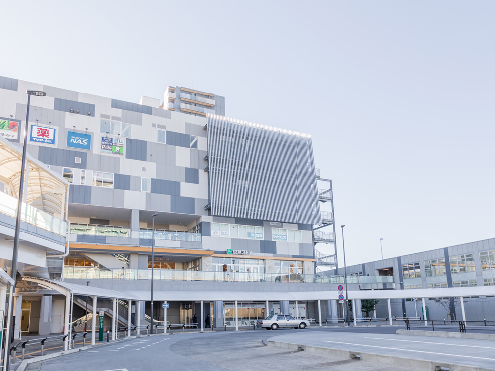
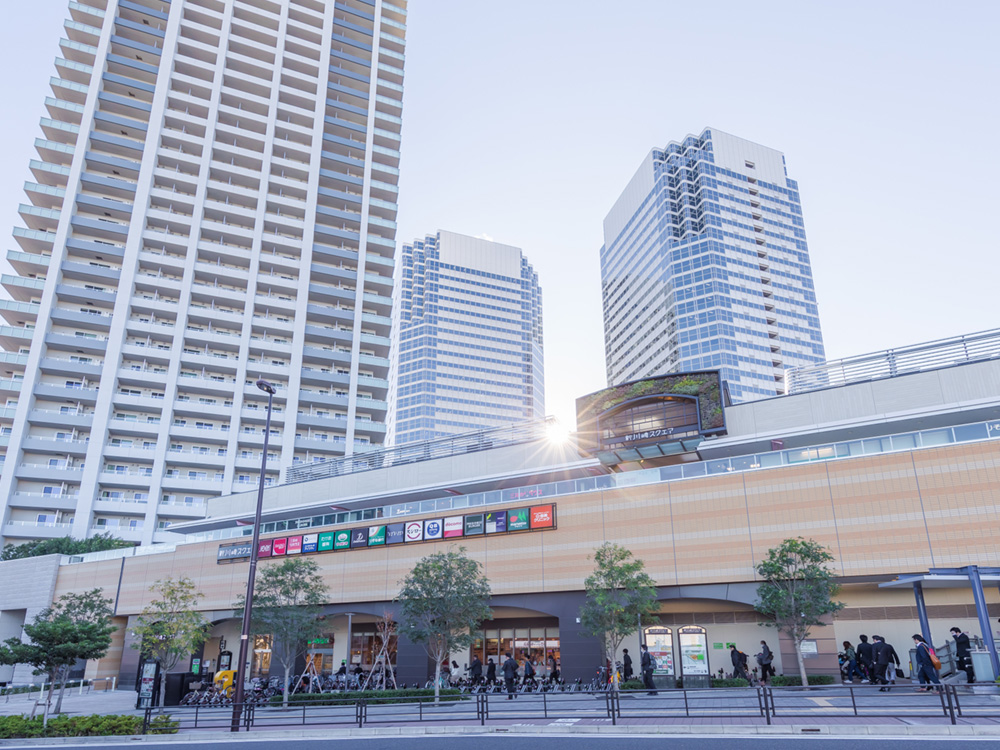
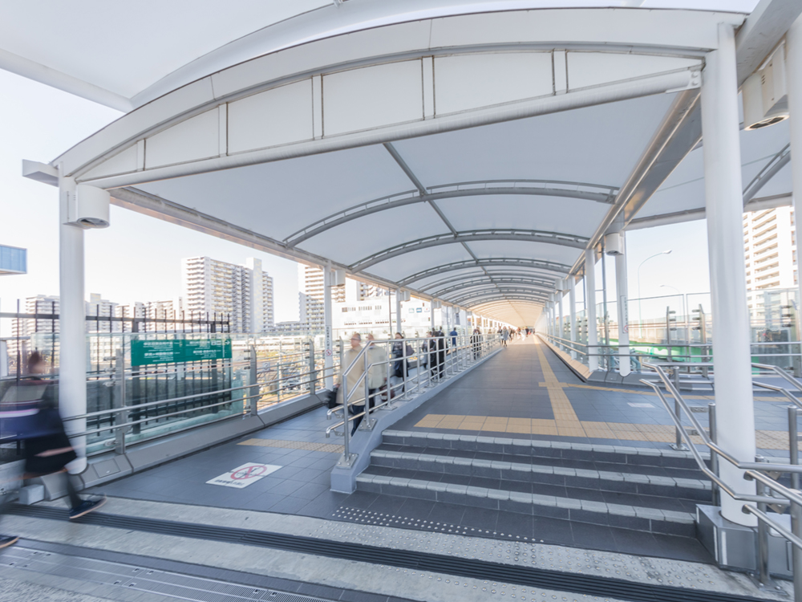
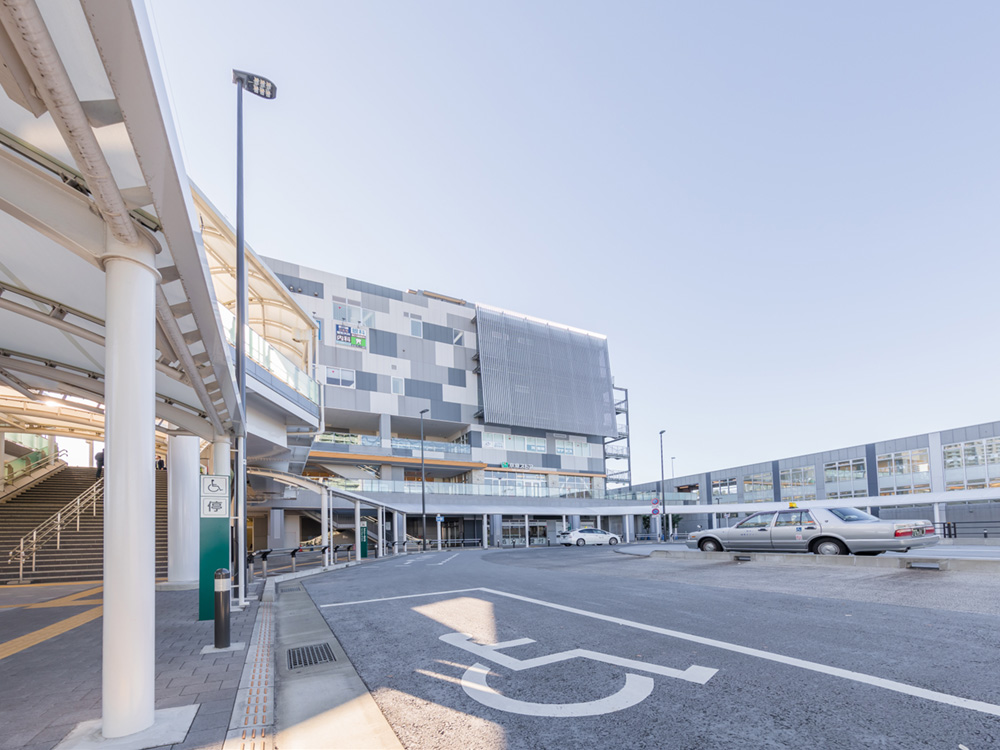
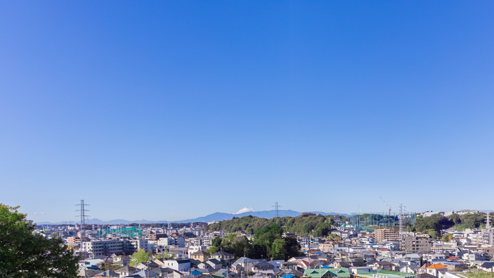
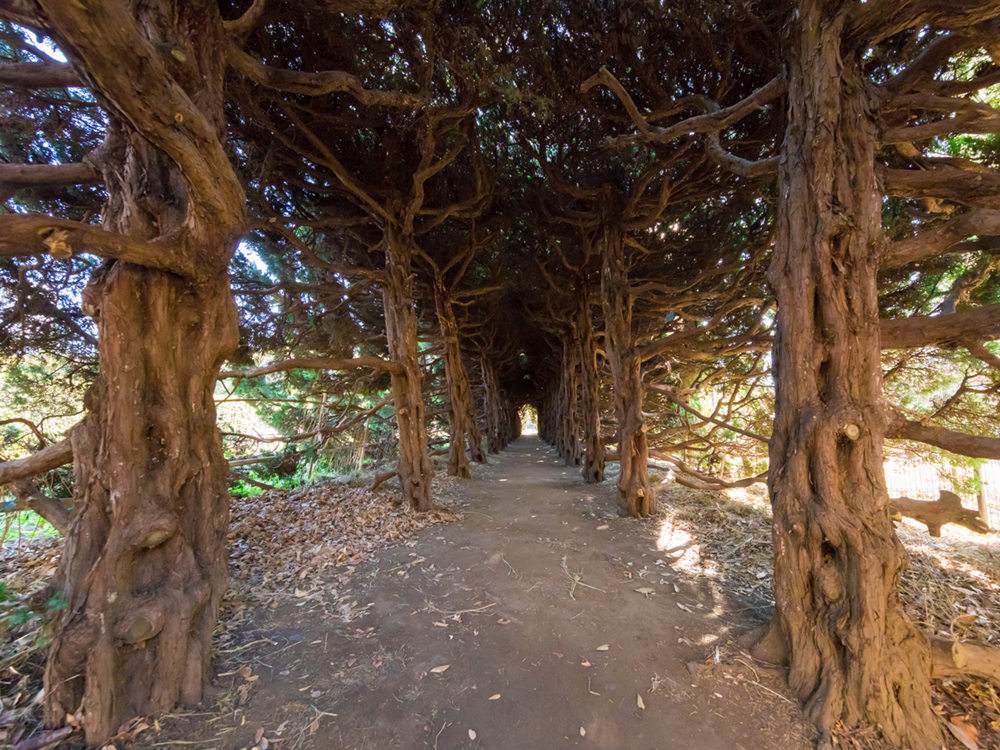

Location 現地案内図
Map 現地案内図
Information 周辺施設
駅前を中心とした商業施設
や生活利便施設が充実し、
駅を少し離れると
憩いの公園や動物園も。
都市と緑地がバランス良く配置された
新川崎周辺案内。
新川崎駅駅前
- 新川崎駅
- JR新川崎駅からViewLietoのある西側はアーケードが設置された「歩行者専用歩道橋」でつながっているので雨の日も気軽に利用できます。
-

- シンカモール
- 新川崎駅西側の複合商業ビル。ドラッグストアやスーパーなどが多数揃っています。
-

- 新川崎スクエア
- 新川崎の東側に位置するショッピング・ビルです。
-

- 歩行者専用歩道橋
- View Lietoのある西側に設置されたアーケード付きの歩道橋。
-

- 新川崎駅前ロータリー
- バス停留所やタクシー乗り場などがあります。
公園
- 夢見ヶ崎公園
- 丘陵地にあるためとても見晴らしの良い夢見ヶ崎公園。静かで穏やかな、市民の憩いの場です。
- 夢見ヶ崎動物園
- 公園に隣接された動物園。レッサーパンダやペンギンがのびのび暮らす、癒しのスポットです。

- 公園からの眺望
- 澄んだ晴れの日には富士山を望むことができます。
-

- 多世代が集う緑豊かな街、新川崎
- 子育て世代からシニア世代、また外国の方なども集う、緑豊かな住みやすい街です。
- [商業施設]
-
新川崎スクエア 約1100m ルリエ新川崎 約1400m マルエツ 新川崎 約1100m 京急ストア 新川崎店 約750m ドトールコーヒーショップ 新川崎京急ストア店 約750m スシロー新川崎スクエア店 約1100m フレッシュネスバーガー 新川崎スクエア店 約1100m マクドナルド 川崎南加瀬店 約700m サイゼリヤ新川崎スクエア店 約1100m スポーツクラブNAS新川崎店 約750m まいばすけっと南加瀬３丁目店 約1200m ローソン北加瀬店 約300m セブンイレブン川崎北加瀬店 約120m ファミリーマート新川崎三井ビルWT店 約1100m ミニストップ新川崎店 約800m マツモトキヨシ新川崎シンカモール店 約750m AOKI川崎北加瀬店 約90m リンクス新川崎（ゴルフ練習場） 約15m ニューデイズ新川崎店 約850m ジェクサー・フィットネス&スパ新川崎 約1100m
- [学校・保育施設]
-
日吉保育園 約550m 日生夢見ヶ崎保育園ひびき 約850m どりーむ保育園 約700m 川崎市立北加瀬保育園 約600m 白山幼稚園 約350m 川崎こまどり幼稚園 約950m 夢見ヶ崎小学校 約750m 川崎市立日吉小学校 約1100m 川崎市立日吉中学校 約500m 慶應義塾大学 新川崎タウンキャンパス 約1100m
- [金融機関]
-
川崎北加瀬郵便局 約1100m 川崎信用金庫加瀬支店 約1400m 東日本銀行 約1100m りそな銀行 約750m
- [医療機関]
-
鹿島田病院 約1500m まつの内科クリニック 約750m 高取内科医院 約400m パークシティクリニック 約1200m 新川崎耳鼻咽喉科医院 約1100m 新川崎歯科医院 約850m 新川崎グレイス歯科 約750m 新川崎眼科 約750m 新川崎ひたち整形外科 約750m あいあいペットクリニック 約300m
- [公共施設]
-
合同庁舎 約1000m 川崎市役所こども本部 約700m JR新川崎駅 約850m JR鹿島田駅 約1300m
- [公園]
-
夢見ヶ崎公園 約700m 夢見ヶ崎動物公園 約400m 夢見ヶ崎児童公園 約450m 北加瀬熊野台公園 約750m 北加瀬北ノ根公園 約300m 北加瀬公園 約550m 加瀬白山古墳跡 約400m 加瀬台古墳群 約400m